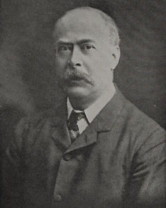

|  |
Doyne honeycomb choroiditis = the occurrence of colloid bodies (drusen) observed to lie on Bruch's membrane in certain families who lived in Oxford, England. These drusen tended to merge together and eventually become confluent, resembling a honeycomb; hence, the name Doyne's honeycomb choroiditis.
Robert Walter Doyne was educated at Oxford, Bristol and St. George's Hospital in London, he settled in Oxford in 1885 to find no facilities in the city for the treatment of ocular disease; it is typical of Doyne that in 1886 the Oxford Eye Hospital was founded, in 1902 the Readership was established in the University, and in 1909 the Oxford Ophthalmological Congress was founded with Doyne as the first Master, an annual meeting which has since become one of the features of British and world ophthalmology. He was an extraordinarily acute and accurate clinical observer and the hyaline degeneration which is named after him (Doyne's honeycomb choroiditis) is only one of the several conditions he first described. He was uniquely original, honest, generous and modest and if he were perhaps quick to take offence as is every whimsical Irishman, he was full of personal charm and equally quick to forgive; and the affection with which he was held was epitomized by the establishment of the Doyne Memorial Lecture and Medal two years after his death, still one of the most prized distinctions of British Ophthalmology.
Reference: